In this section, you will be shown how to use the .NET Core command line tools to create a simple Razor Pages application and how to build and run it in the browser. You will also explore the various parts of the application and understand the role that each part plays.
Try it out: creating your first Razor Pages application
If you haven't already done so, download the latest version of the .NET Core SDK.
Open your preferred command line tool (cmd.exe or Powershell in Windows; Terminal on a Mac; Bash or similar on Linux) and enter
dotnet --version.Check the output to confirm that your version of .NET Core is at least 2.0.
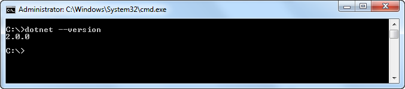
Navigate to a suitable location for your application if needed and then type
mkdir RazorPagesto create a folder for your application's files.Type
cd RazorPagesto enter the application folder.Type
dotnet new razor. This command generates the application files from the basic site template. You should receive confirmation that the site was created and that thedotnet restorecommand is being run. Thedotnet restorecommand looks at the dependencies required for the application and obtains them from NuGet.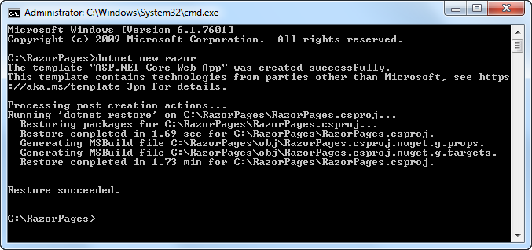
Type
dotnet runwhich compiles the application and launches it on port 5000: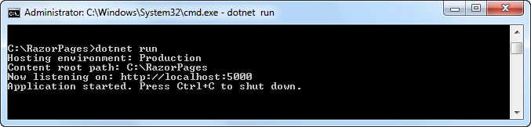
Open you preferred browser and navigate to
http://localhost:5000. The web site should appear: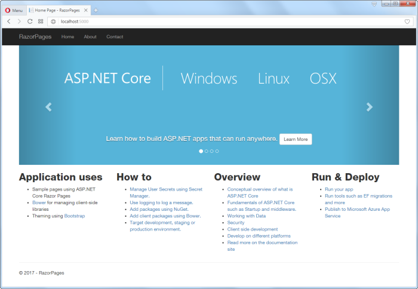
Visual Studio
If you are using Visual Studio, go to File » New » Project and then select ASP.NET Core Web Application from the list of templates filtered by clicking on the Web entry in the left hand pane:
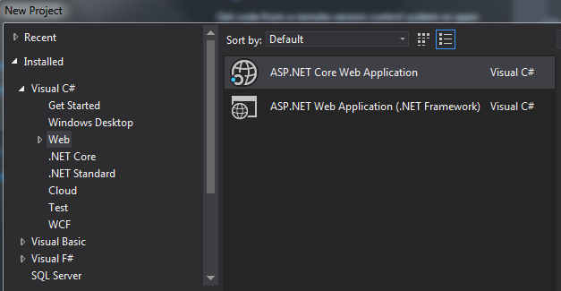
Amend the file name options and the location where the project files will be created to suit your needs.
Next, select Web Application from the dialog that appears:
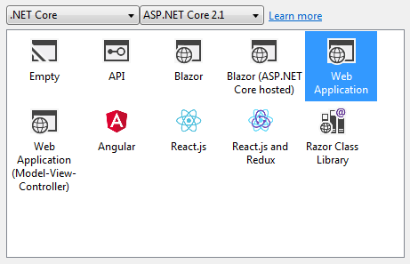
This will result in a new Razor Pages application being created which should be identical to the one generated via the command line.
Anatomy of a Razor Pages application
A Razor Pages application comprises many folders and files. In the next section, you will explore the files that were generated when you created, restored, compiled and ran the application in the previous section. Here is an explorer view of the application folder structure followed by a closer look at each folder or group of files:
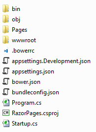
Pages folder
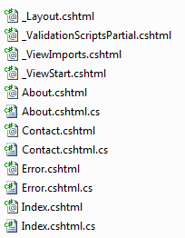
The Pages folder is the default location for Razor Pages files. The files ending with .cshtml are Razor files. Other files, ending with .cs are C# class files. These are paired with Razor files and are known as PageModel files. Not all Razor files have a matching class file. Some Razor files have a leading underscore (_) in their file name. These files are not browsable, but they perform distinct roles as part of a Razor Pages application. You can read more about these special Razor files and their roles.
wwwroot folder
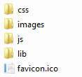
The wwwroot folder is where static files are placed in a .NET Core web application. These files include the CSS style sheets, images and JavaScript files used by the site. An additional folder named lib contains third party client-side packages. These packages are managed by Bower, the default client-side package manager for Razor Pages and MVC applications.
lib Folder
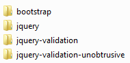
The third party client side packages included as part of the template are:
- BootStrap: a UI framework built by a team at Twitter that reduces the work required to design site layouts, and also includes a range of built-in styles for components such as bittons, forms, tables, inputs and so on.
- jQuery: a JavaScript library that BootStrap relies on.
- jQuery Validation: a jQuery plugin for client-side validation of forms
- jQuery Unobtrusive Validation: another jQuery validation plugin designed by the ASP.NET team to work specifically with form inputs generated by Razor helpers.
Root files
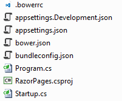
A number of files reside in the root folder.
| File | Description |
|---|---|
| .bowerrc | A Bower configuration file (This is no longer included from version 2.1 onwards) |
| appsettings.json | A json-based file for application-wide configuration settings |
| appsettings.Development.json | A json-based file for application-wide configuration settings that only take effect during development |
| bower.json | A Bower manifest file (This is no longer included from version 2.1 onwards) |
| bundleconfig.json | A configuration file for bundling and minification (This is no longer included from version 2.1 onwards) |
| Program.cs | The entry point for the Razor Pages application |
| RazorPages.csproj | An XML-based file that contains information about the project |
| Startup.cs etc | The Startup class configures the request pipeline that handles all requests made to the application |
Bin folder
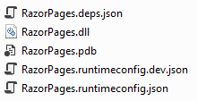
The bin folder is the default output location for binary files generated when the application is compiled. Typically, this folder contains two sub-folders, Debug and Release. The first is for the binaries that result from compiling the application in Debug mode, and the second is where binaries generated from a compilation in Release mode are placed. Both of these folders contain a subfolder named netcoreapp[version number], where [version number] represents the version of .NET Core used to create the application. If you are using .NET Core 2.0, the folder name will be netcoreapp2.0. The files that you see in the image above are from /bin/Debug/netcoreapp2.0/
Obj folder

The Obj folder is used to store temporary object files and other files that are used to create the final binary during the compilation process.